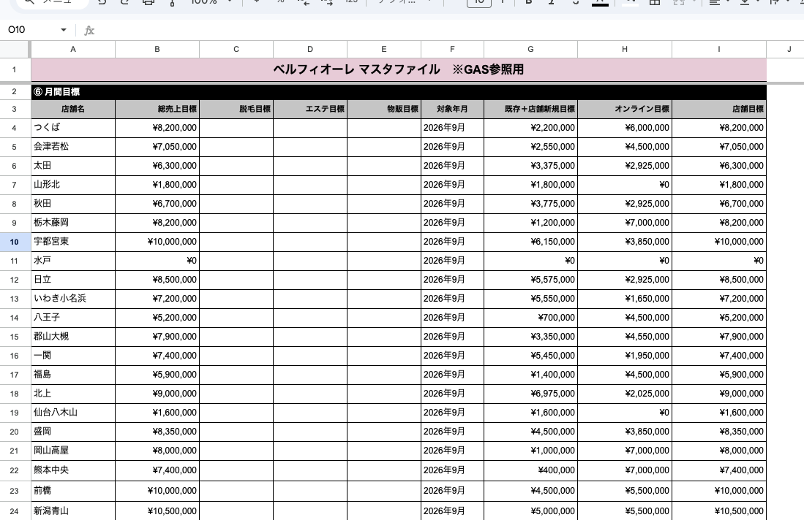
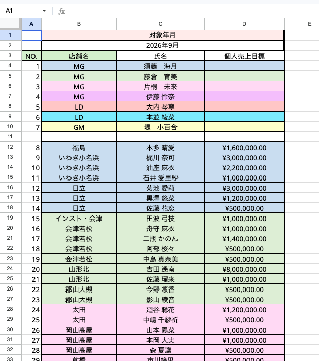
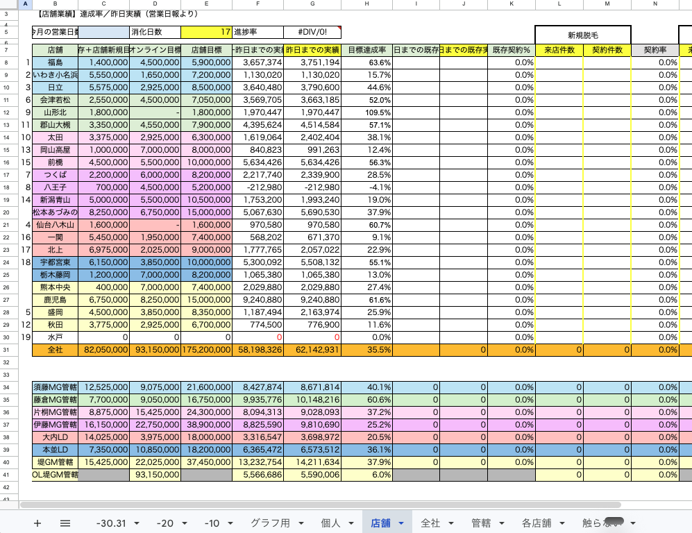
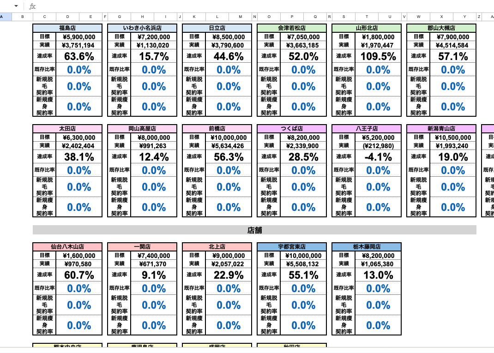
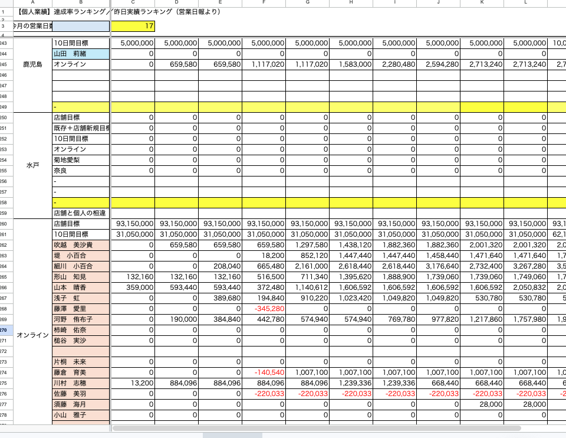
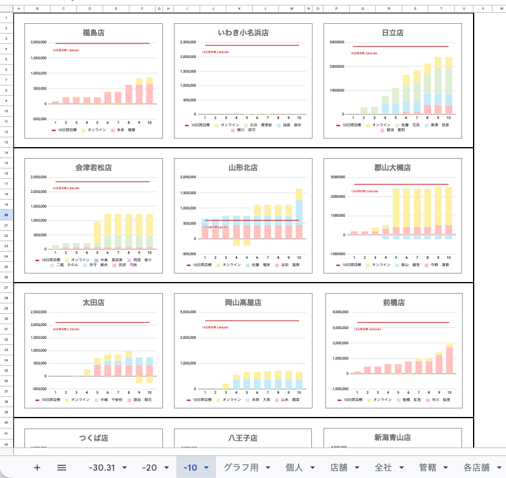

1概要
マスタに入力された内容から、店舗別・個人別・管轄別の数字とグラフが自動で作られます。毎日の更新も、翌月のファイル作りも自動です。
人がやることは、毎月マスタを更新することと、店舗が増えたときの登録の2つだけです。
2ファイルの関係
| ファイル | 役割 |
|---|---|
| ベルフィオーレ_マスタ | ここへの入力がすべての元になります。毎月の更新もここ |
| 営業日報2026_原本 | 毎月のファイルはこれをコピーして作られます。メニューもここにあります |
| 【2026年◯月度】営業日報 | その月の実物。原本と同じフォルダに自動で作られます（リンクはフォルダ） |
3自動反映タイミング
| いつ | 何を |
|---|---|
| 毎日 2時台 | その日までの数字に更新（朝いちばんに見られる状態にする） |
| 毎日 8時台 | もう一度更新。こちらが確定版 |
| 毎月 最終日の22時台 | 翌月のファイルを作る |
目標・実績・既存比率・契約率・管轄と全社の合計・名簿・管轄の色・グラフの棒は、すべて自動で入ります。
4毎月の作業
タイミング：月末の夜〜1日の朝。1日の早朝に自動で反映されます。
マスタ⑥「月間目標」

1 2 3- F列「対象年月」を翌月に変える（例：
2026年10月） - B列「総売上目標」を翌月の金額に
- G列「既存＋店舗新規目標」／H列「オンライン目標」／I列「店舗目標」を翌月の金額に
C・D・E列（脱毛目標・エステ目標・物販目標）は空欄のままで大丈夫です。
上書きで大丈夫です。前の月のファイルの目標は消えません。
マスタ⑦「柿崎さん用個人実績反映」

1 2 3- 2行目「対象年月」を翌月に変える（例：
2026年10月） - B列「店舗名」・C列「氏名」を翌月の顔ぶれに更新
- D列「個人売上目標」を更新
5メニューの使い方
原本を開くと、上部に「営業日報」メニューが出ます。
6店舗が増えたとき
まず：どのファイルに入れるか
| 状況 | 入れる先 |
|---|---|
| 来月オープン（当月はまだ売上なし） | 原本だけでOK ← ふつうはこちら |
| 月の途中でオープンして、もう売上がある | 原本 ＋ いま使っている月のファイル |
手順
- ベルフィオーレ_マスタ の「①店舗・組織情報」シート
新店舗の行を追加。MG管轄も必ず入れる - ベルフィオーレ_マスタ の「⑥月間目標」シート
新店舗の行を追加 - 営業日報2026_原本 の「店舗」シート
新店舗の行を、該当箇所に追加してください
1① 「全社」の行より上が、店舗の行です。同じ管轄の店は同じ色でまとまっています - 営業日報2026_原本 の「各店舗」シートと「グラフ用」シート
カードをコピーして店舗名を新店舗名に変更し、該当箇所に貼り付けてください
1 2① 同じ管轄の店は同じ色でまとまっています ② その管轄のとなりに追加します 「グラフ用」シートも同じです。まとまりをコピーして店舗名を変更し、「オンライン」のまとまりの上に貼り付けてください

3③ これが1店舗ぶんのまとまりです - 営業日報2026_原本 の「-10」「-20」「-30.31」シート
グラフをコピーして店舗名を新店舗名に変更し、該当箇所に貼り付けてください。3シート全部にお願いします
1 2① これが1つぶんのグラフです ② このタイトルを新店舗名に変えます（「◯◯店」と「店」まで入れます） システムはグラフのタイトルで店舗を見分けます。タイトルの変更を忘れないでください
当月のファイルにも入れた場合は、最後に 営業日報2026_原本 のメニュー「今月のファイルを作る・数字を入れ直す」を押してください。原本だけなら何もしなくて大丈夫です。
7閉店・人の増減
店舗が閉店したとき
ベルフィオーレ_マスタ の「⑥月間目標」で、その店の目標を 0 にしてください。これだけで、実績0・達成率0% として表に並び続けます。
2026年9月時点の水戸店が、この状態です。
人が増えた・減ったとき
マスタ⑦の名簿を直すだけです。人数が変わっても自動で追従します。空きが残り3行を切ると知らせが出ますので、そのときは根本に連絡してください。
8FAQ
| 症状 | 見るところ |
|---|---|
| 新しい月のファイルに数字が入らない | マスタ⑥⑦の「対象年月」がその月になっているか |
| 誰かの達成率が 0.0% のまま | マスタ⑦のD列「個人売上目標」が空欄でないか |
| オンラインのグラフに棒が出ない | 同上（オンラインの方の個人売上目標） |
| 店舗の目標が先月のまま | マスタ⑥の対象年月がまだ前の月になっている |
| 新しい店の数字・グラフが出ない | ブロックを足したか、グラフのタイトルを店舗名にしたか。当月のファイルにも入れたか |
| 全社の合計が実際より少ない気がする | 当月のファイルに行が無い店がないか |
| メニューを押したらエラーが出た | 月ごとのファイルのメニューを押していませんか。操作は原本から |
| 既存比率が全部 0.0% | 日報側から既存の数字が届いていません。根本に連絡してください |
それでも分からないときは、何のシートの何行目がどうなっているかを添えて根本に連絡してください。
9触らないもの
| 場所 | 理由 |
|---|---|
| 月ごとのファイルのメニュー | 押すとエラーになります。操作は原本から |
| グラフ用シート | グラフを作るためのデータ置き場です。手で直しても、次の更新で上書きされます |
| グラフ用_期間／グラフ用_管轄 | 同じくグラフ用のデータ置き場です（非表示にしています） |
| 店舗シート 99〜124行 | Excel時代の残骸。使っていません。消す必要もありません |
| 「触らない」シート | 以前の検証用のデータが入っています。使用していません |
| シート名・項目名 | 名前で場所を探しているため、変えると止まります。変えるときは事前に根本へ連絡 |
10数字の参照について
表の各項目が、どのデータを参照しているかの一覧です。数字に疑問があるときは、ここから確認してください。
| 表の項目 | 参照元 |
|---|---|
| 店舗 C / D / E（目標） | マスタ⑥月間目標（対象年月が一致する行だけ） |
| 店舗 F / G（実績） | マスタ「全店日別」の入金売上を1日から積み上げ |
| 店舗 I / J（既存実績） | マスタ「全店日別」の既存入金売上を積み上げ |
| 店舗 L〜Q（新規脱毛・痩身） | マスタ「全店内訳データ」の来店者数／契約者数 |
| 店舗 全社行 | 店舗の行の足し算 |
| 店舗 管轄行 | マスタ①店舗・組織情報の「MG管轄」で束ねた足し算 |
| 店舗 OL堤GM管轄行 | 個人シートのオンラインの人の合計 |
| 個人シート | マスタ「全店個人日別」＋名簿はマスタ⑦ |
| 各店舗／全社／管轄シート | すべて店舗シートを参照 |